Apple App Store icon
- Platform
- Apple App Store
- Dimensions
- 1024 x 1024 px
- File
apple/app-icon-1024.png- Source
mobile-app/assets/icon.png- Status
- Complete, pending approval
APPROVED BY OWNER
A focused owner review of production-ready store graphics and authentic current-app screenshots.
apple/app-icon-1024.pngmobile-app/assets/icon.pnggoogle-play/app-icon-512.pngmobile-app/assets/icon.pnggoogle-play/feature-graphic-1024x500.png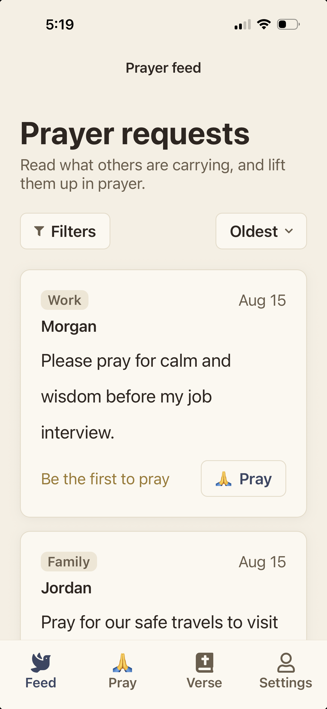
01-shared-prayer-feed.png
Source: authentic iPhone capture. Status: Complete, pending approval.
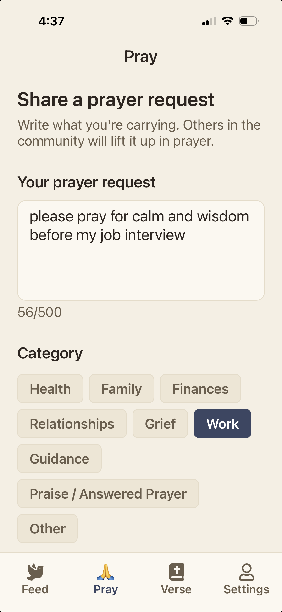
02-create-prayer-request.png
Source: authentic iPhone capture. Status: Complete, pending approval.
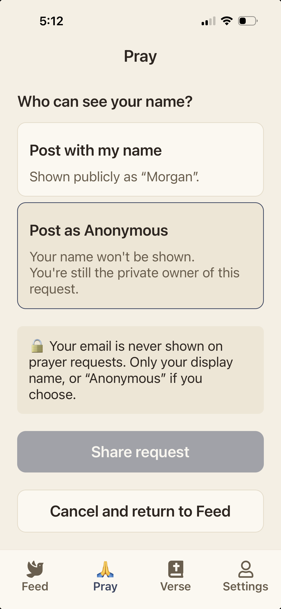
03-anonymous-display-choice.png
Source: authentic iPhone capture. Status: Complete, pending approval.
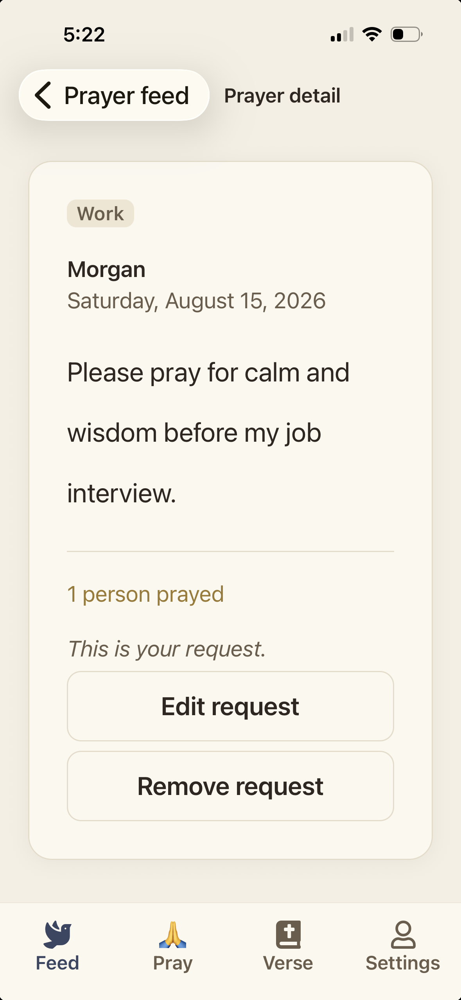
04-prayer-detail.png
Source: authentic iPhone capture. Status: Complete, pending approval.
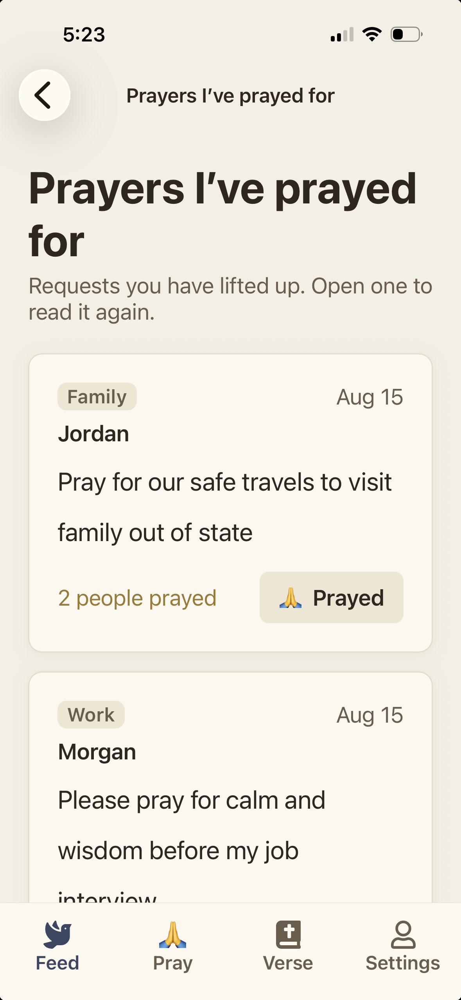
05-prayers-prayed-for.png
Source: authentic iPhone capture. Status: Complete, pending approval.
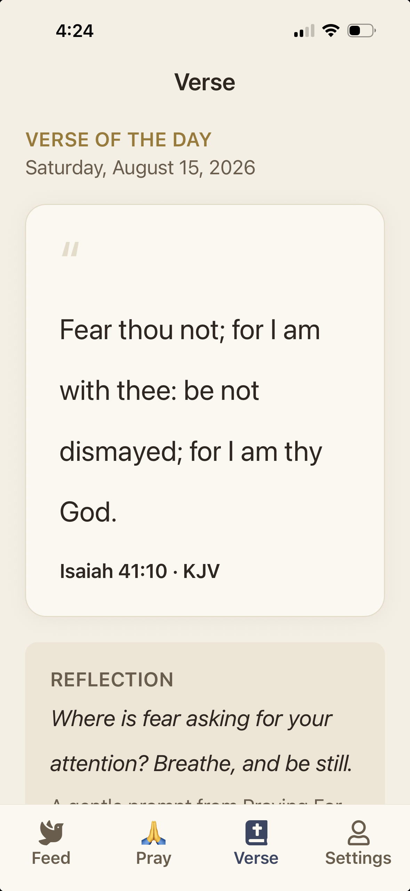
06-verse-of-the-day.png
Source: authentic iPhone capture. Status: Complete, pending approval.
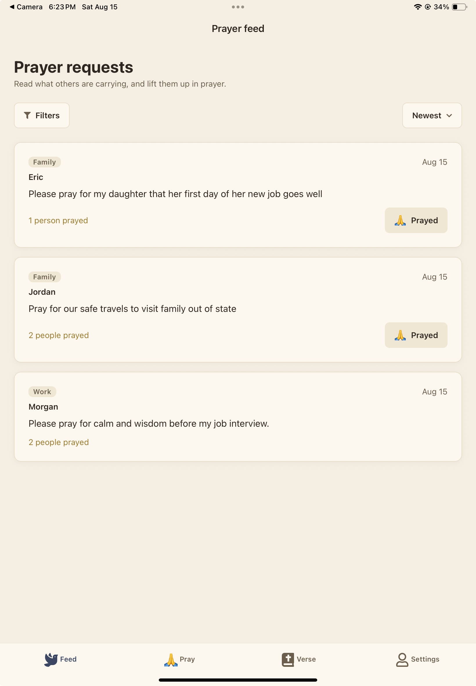
01-shared-prayer-feed.jpg
Source: authentic iPad capture. Status: Complete, pending approval.
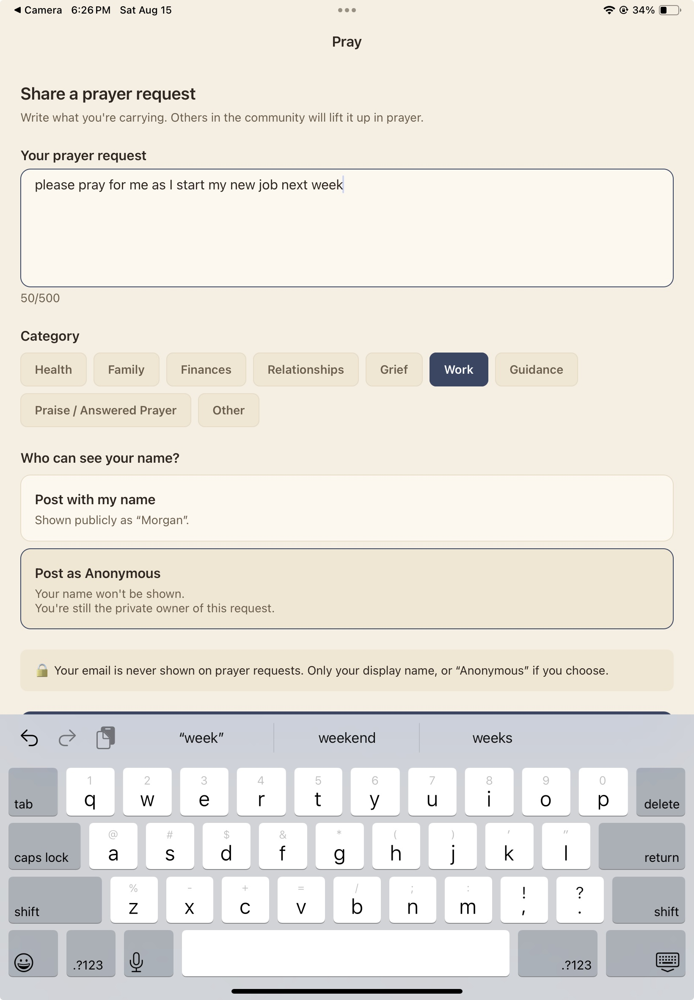
02-create-request-and-anonymous-choice.jpg
Source: authentic iPad capture. Status: Complete, pending approval.
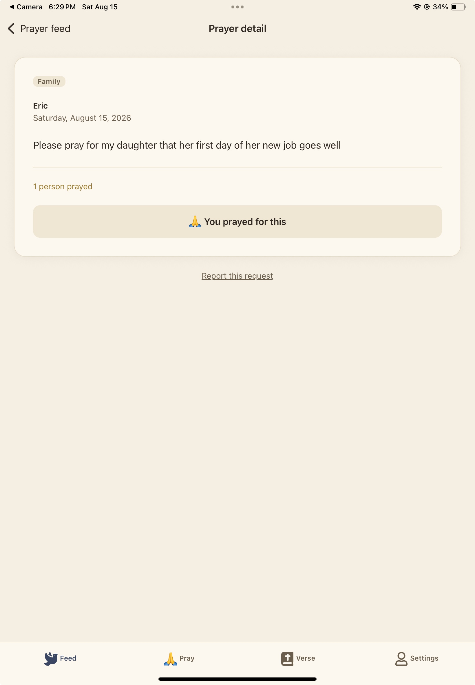
03-prayer-detail.jpg
Source: authentic iPad capture. Status: Complete, pending approval.
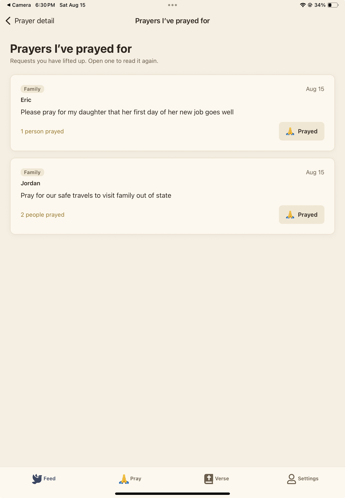
04-prayers-prayed-for.jpg
Source: authentic iPad capture. Status: Complete, pending approval.
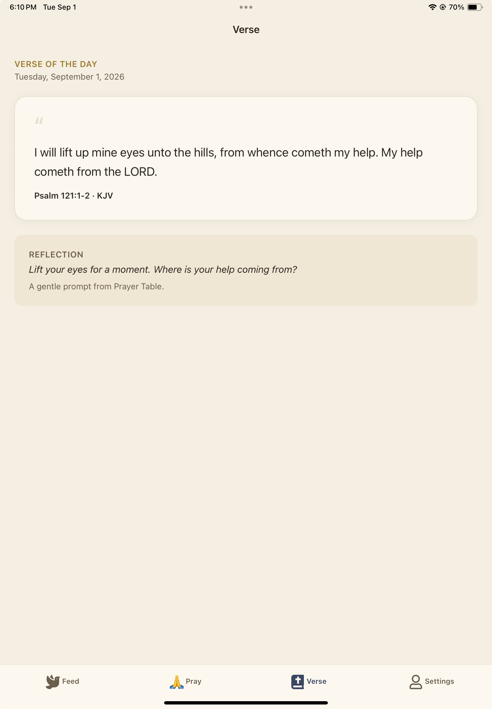
05-verse-of-the-day.jpg
Source: authentic iPad capture. Status: Complete, pending approval.
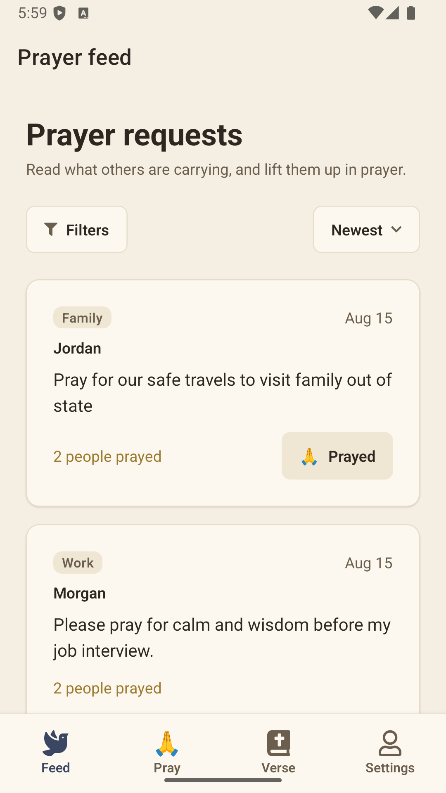
01-shared-prayer-feed.png
Source: authentic Pixel 2 emulator capture. Status: Complete, pending approval.
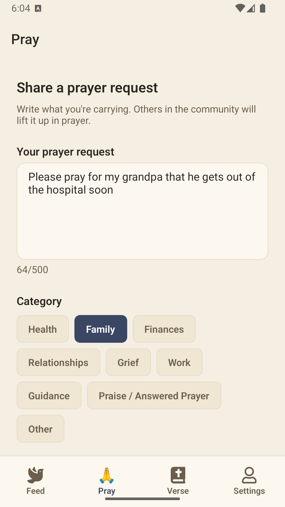
02-create-prayer-request.png
Source: authentic Pixel 2 emulator capture. Status: Complete, pending approval.
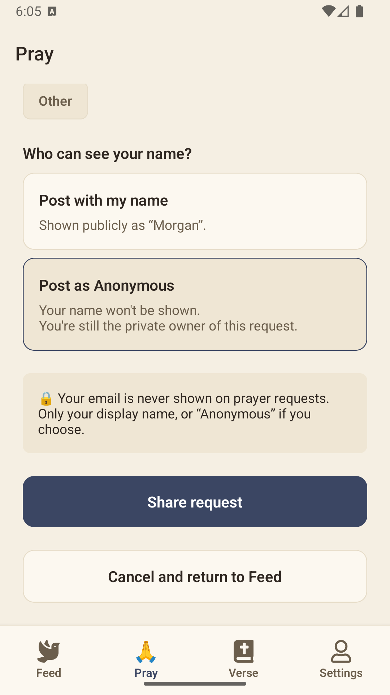
03-anonymous-display-choice.png
Source: authentic Pixel 2 emulator capture. Status: Complete, pending approval.
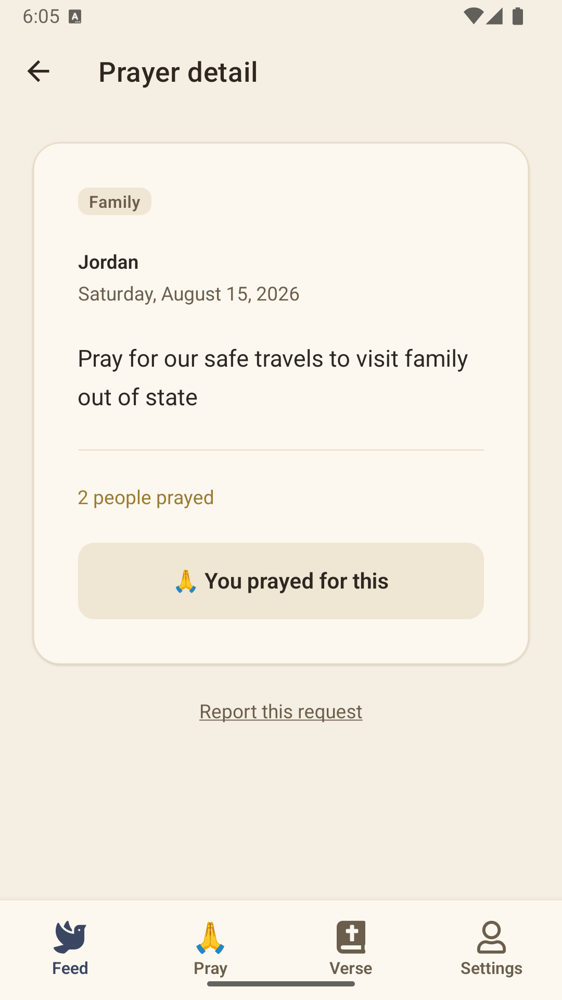
04-prayer-detail.png
Source: authentic Pixel 2 emulator capture. Status: Complete, pending approval.
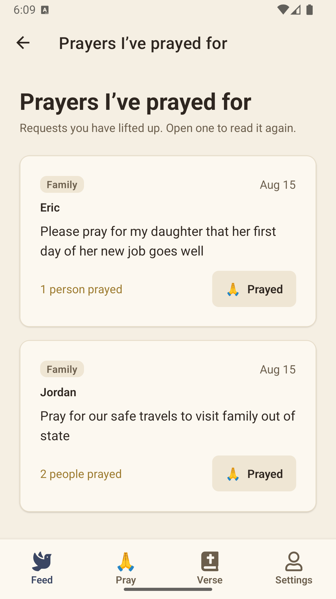
05-prayers-prayed-for.png
Source: authentic Pixel 2 emulator capture. Status: Complete, pending approval.
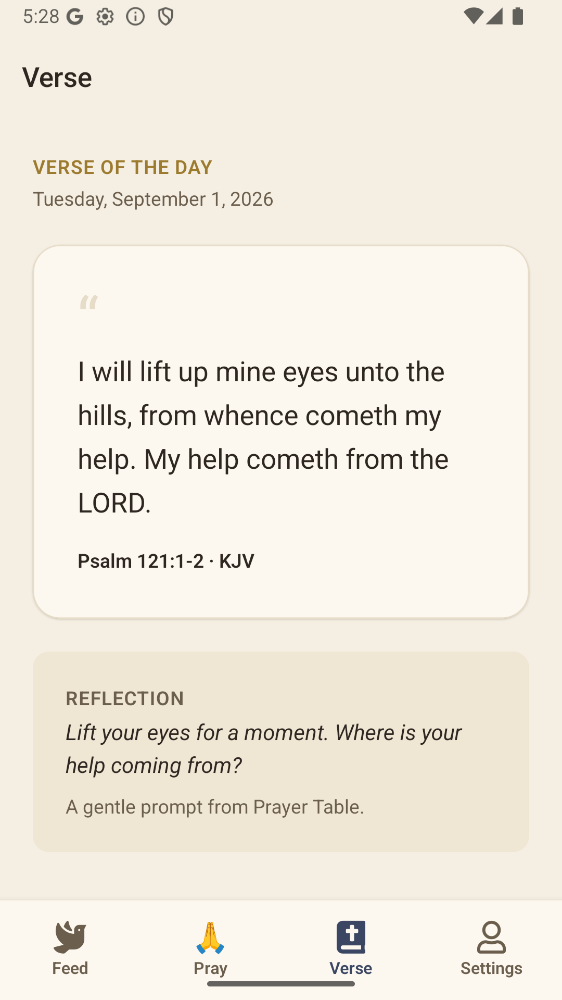
06-verse-of-the-day.png
Source: authentic Pixel 2 emulator capture. Status: Complete, pending approval.
Owner decision: Approved Date: 2026-08-15 Name: Heriberto Rodriguez Jr.